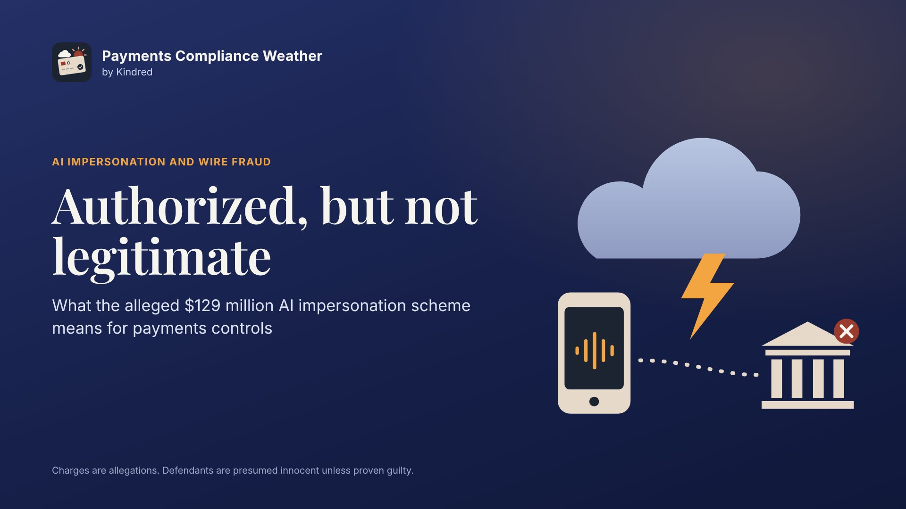

Payments Compliance Weather
Authorized, but not legitimate: lessons from the AI impersonation case

Prosecutors allege that a group used AI to impersonate CEOs and lawyers, and that companies wired them more than $129 million. In each payment described, a real employee approved the transfer.
That is the uncomfortable part. Most fraud controls ask one question: is this really the account holder? Here, as alleged, the answer was yes. The employee was genuine, the login was genuine, and the approval was genuine. What was fake was the instruction behind it.
What prosecutors allege
On November 5, 2026, the U.S. Attorney’s Office for the Southern District of New York announced charges against Jacob Soall, Sharon Hazan and Guy Sheetrit. The charges include wire fraud, aggravated identity theft and money laundering. They are allegations, and the defendants are presumed innocent unless proven guilty. Extradition requests are pending.
According to the release, the scheme ran from 2024 to 2026 and worked in four steps:
- The call. Someone posing as the company’s CEO contacted an employee about a confidential transaction, using AI to imitate the executive’s voice and, at times, image.
- The referral. The “CEO” referred the employee to a lawyer at a large international firm. The lawyer was also impersonated.
- The wire. The “lawyer” directed a large wire to an account the group controlled, in the United States, Spain, Portugal, Greece, the United Arab Emirates, Singapore, Austria, Slovakia or China.
- The conversion. The funds were converted into cryptocurrency and distributed.
One defendant allegedly used a handwritten “Lawyer Call” script, including language to discourage employees from discussing the calls with colleagues. Named victims include hospital systems in Missouri and California, a bank in Rhode Island, a UK financial technology company, a Massachusetts mutual fund company and a Florida pet food company.
Why this is a payments compliance problem
When authentication passes, the control has to sit somewhere else. Along the payment chain described in the release, there are four points where a transfer like this can be questioned:
- 1The paying companyApproval and verification procedures
- 2The sending bank or payment providerPayment monitoring
- 3The receiving institutionsAccounts suddenly receiving large payments from unrelated companies
- 4The crypto platformsDeposits shortly after those payments arrive
Each point is a chance to protect the company paying and, behind it, the people that money was meant for.
What to check, by role
Finance and treasury teams
- Verify any request to send money or change payment details through a channel already on file, never one supplied in the request. Call the CEO back on their known number, not the number in the email.
- Treat secrecy as a red flag in itself. A request to keep a payment from colleagues is a reason to escalate, not to comply.
- Require a second approver who was not on the call.
- Train staff on cloned voices and video specifically. Recognizing a voice is no longer verification.
Banks and payment providers sending payments
- Look closely at first-time, high-value, cross-border payments to a new beneficiary, especially in a jurisdiction the client does not usually pay.
- Add friction when a large payment falls outside the client’s normal cycle and comes with time pressure.
- Make it simple for business clients to pause or recall a payment, and act on those requests within hours.
Institutions receiving payments, including fintechs and PayFacs that open accounts
- Watch for accounts that receive large wires from businesses with no apparent link to them, then move the money out quickly, especially to crypto platforms. This is a typical money mule pattern.
- Reassess accounts whose activity no longer matches the profile given at onboarding.
- File suspicious activity reports where required. FinCEN’s alert on deepfake fraud schemes (FIN-2024-Alert004) sets out typologies and red flags.
Crypto platforms
- Look at deposits that follow shortly after large incoming wires to newly opened accounts.
- Respond quickly to law enforcement and to financial institutions trying to trace funds.
Speed is the control
FinCEN’s Rapid Response Program fact sheet (April 2026) says fraudulently induced wire transfers reported to law enforcement within 72 hours are the most likely to be stopped or recovered.
Victims should contact their financial institution immediately and file a complaint at IC3.gov. FinCEN reports that since 2015 the program has interdicted $1.8 billion and recovered more than $1 billion.
Your incident plan should name who calls the bank, who files with IC3, and where to find what they will need: the beneficiary’s name, account and bank, the country of the receiving branch, the wire date, the amount and currency, and a short summary of what happened.
The people behind it
Two of the named victims are hospital systems. A diverted wire there is more than a line on a balance sheet. Behind it is an employee who believed they were helping their CEO, and an organization whose money was meant for something else. Controls that make it normal to pause and verify protect both.
Questions for your team
- Could one person send a large payment on the strength of a call or video alone?
- Is the channel used to verify a request always independent of the request itself?
- Would your monitoring flag a new account that receives several large business wires and sends funds to a crypto platform within days?
- Does your team know about the 72-hour window, and who makes the first call?
I’d like to hear how your organization handles this, and where you think the gaps are. Join the discussion on LinkedIn.
Sources
- U.S. Attorney’s Office, Southern District of New York: Three Foreign Nationals Arrested And Charged With Scheme To Use Super Intelligence To Defraud Companies Of $129 Million, November 5, 2026
- FinCEN: Alert on Fraud Schemes Involving Deepfake Media Targeting Financial Institutions (FIN-2024-Alert004), November 13, 2024
- FinCEN: Rapid Response Program fact sheet, April 15, 2026
- FBI Internet Crime Complaint Center (IC3)
This article is based on public sources and is general information, not legal advice. The charges described are allegations, and the defendants are presumed innocent unless and until proven guilty.